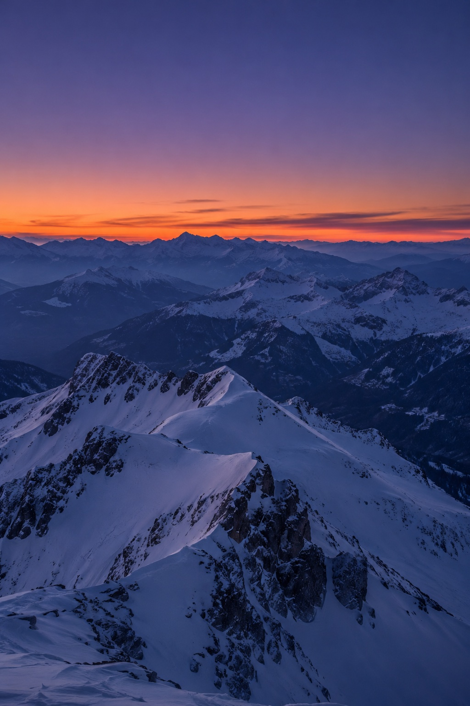
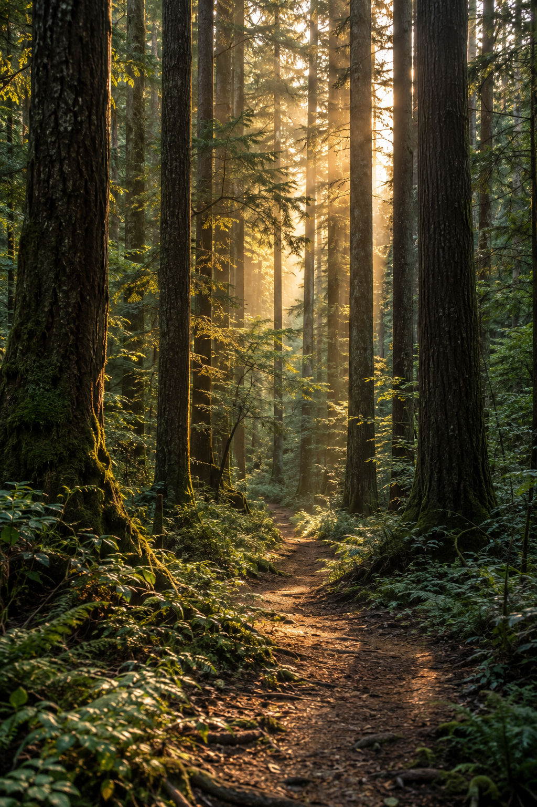
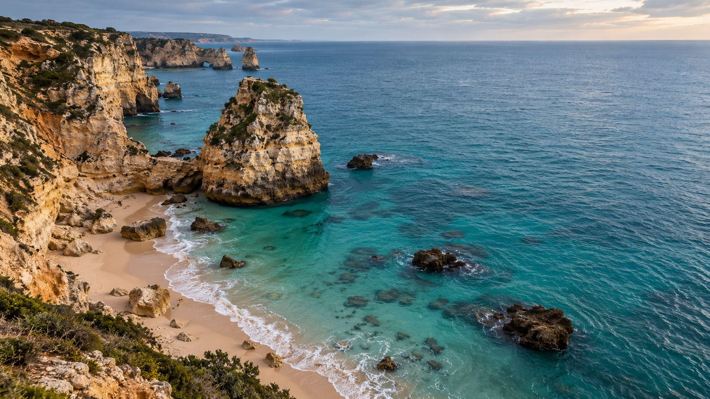
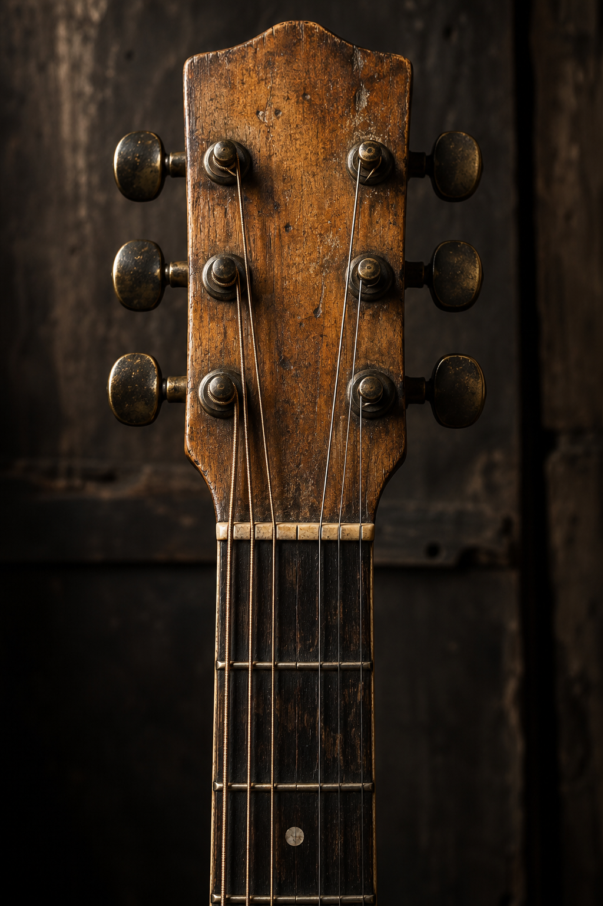
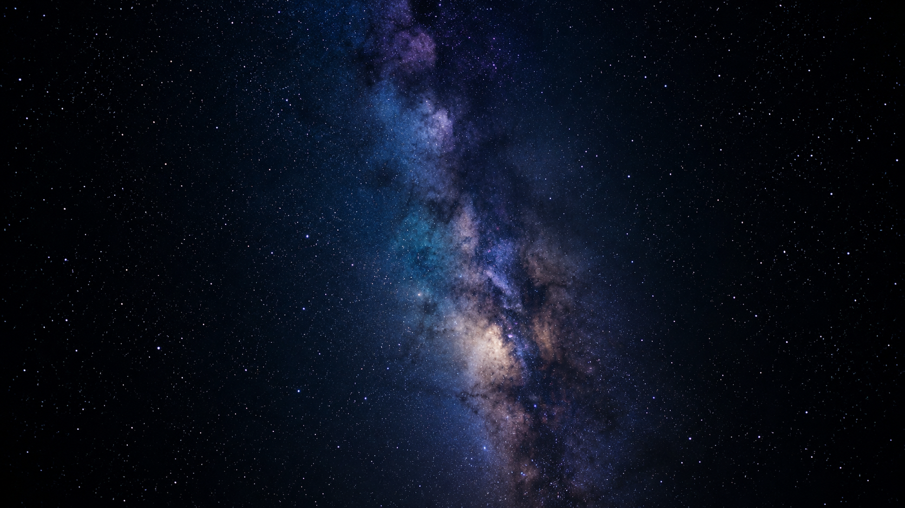
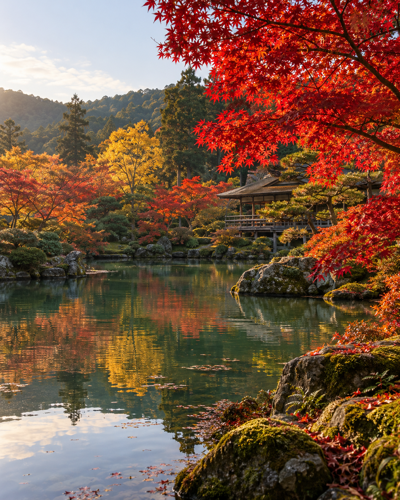
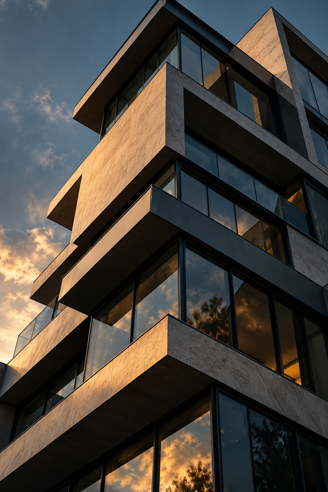

FRAME / 暮色
01

FRAME / 林间
02

FRAME / 岩岸
03
FRAME / 山湖
04

FRAME / 琴首
05
FRAME / 冰原
06

FRAME / 夜空
07

FRAME / 倒影
08

FRAME / 建筑
09
✳
APERTURE
®
INDEPENDENT FRAMES
WORK
STUDIO
PROCESS
CONTACT
返回九栏 ↗
返回作品 ↗